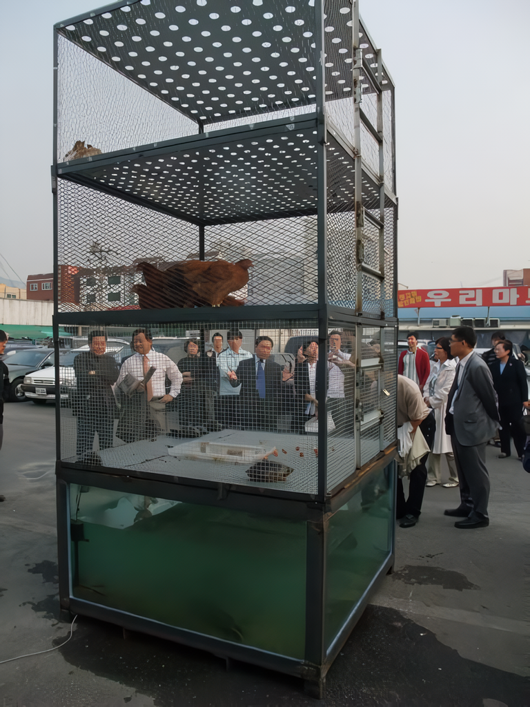
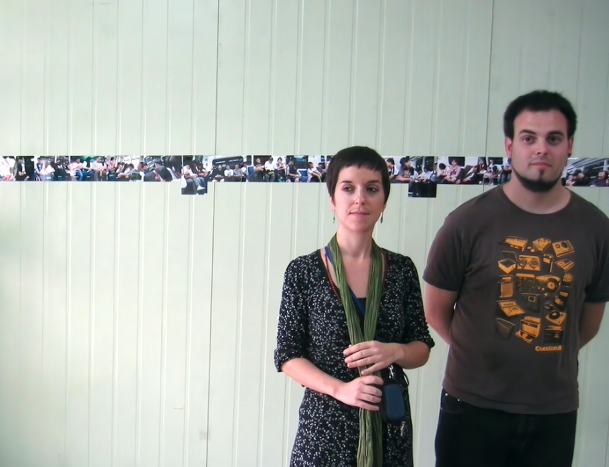

* 애니멀 타워
“Animal Tower" 프로젝트는 한국의 전통적 형태의 상업과 현대적 형태의 상업 사이의 대조에 대한 관찰을 바탕으로 시작되었다. 석수시장에서 이루어지는 상업 활동을 중심으로, 우리의 프로젝트는 안양 뿐만 아니라 서울과 기타 대도시에서의 상업적 구조 내에서 형태의 변화에 대한 생각을 다시 한번 해보도록 제안한다. “Animal Tower"는 철구조물로서 석수시장에서 구매한 네 종류 동물을 담은 철장이 각각 다른 층에 배열되어 있다. 각각의 동물 그룹은 위층에서 떨어진 남은 음식만을 먹도록 되어 있으며, 이것은 바닥에 구멍을 뚫음으로서 아래층으로 갈수록 점점 더 적은 양의 음식을 공급받는 구조로 되어 있다.
* Animal Tower
The project "Animal Tower" originates from the observation of the contrast between traditional and modern forms of commerce in South Korea. Taking the commercial activity of Seoksu Market as the main focus, our project encourages a reflection about the current transformation in the structures of commerce, not only in Anyang, but also in Seoul and other big cities. "Animal Tower" is an iron structure containing cages with four groups of animals purchased in Seoksu Market, separated in different floors. Each of these groups get fed only with the leftover food that falls down from the floor above. This happens through holes in the bottom of each floor, which progressively get smaller and smaller moving from the top level to the bottom.

* 잠든 한국인들
“잠든 한국인들" 는 서울에서 안양으로 가는 지하철 안에서 잠든 사람들의 모습을 담은 일련의 사진이다. 하루 일이 끝난 후 사람들은 주로 한 도시에서 그 근교로 가는 지하철을 타며 피곤한 몸으로 집에 돌아온다. 이러한 현상은 전 세계 여러 국가에서 찾아볼 수 있는데 우리가 이전에 방문했던 다른 도시들보다도 한국에서 이러한 현상은 지하철에서 잠에 곯아떨어진 사람들을 통해서 더 두드러져 보였다.
* Korean sleepers
"Korean sleepers" is a collection of photos of people sleeping in the subway, on their way from central Seoul to Anyang. After a day of work, people usually take the subway to some city in the periphery and come back home exhausted, we can find this in many countries around the world, but maybe in Korea it became even more clear to us than in any other city we have visited befrore, as people just get asleep on the train.

https://www.llobetpons.com/index.html
작가 홈페이지